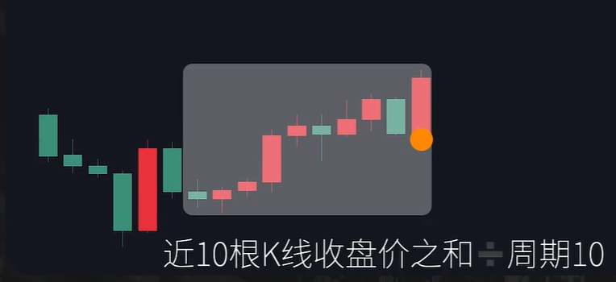

均线
均线的原理
- 名称:简单移动平均线 Moving Average (MA)
- 公式:周期为N的移动平均线 = N根K线的收盘价之和/N

- 周期:短周期均线，中周期均线，长周期均线
- 用法:单根均线，双均线，均线组合
- 作用:追踪趋势，助涨助跌，支撑阻力等。
价格和均线的关系
- 价格影响均线？均线影响价格？
根据均线的绘制规则，从当前K线向前取对应数量的K线收盘价，再按照公式计算得到对于的均线数值，在这个计算过程当中，是近期的K线收盘价，决定了当下均线的数值，所以均线都是根据过去的价格走势绘制出来的，是价格的变化带动了均线的变化，也就是说均线的走势一定是滞后于价格的走势的。但价格不断的上涨，K线的收盘价不断抬高，用收盘价求和，再平均得到了均线的数值，随着价格的上涨，每根K线对应的均线的数值也在抬高，连接起来的均线，就形成了斜率向上的状态，一段时间内价格连续上涨，会使得短周期的均线斜率向上。如果价格在更长一段时间内连续上涨，或者在短时间内大幅上涨，就会使得长周期的均线斜率向上，短周期到长周期的均线，都表现为斜率向上，而短周期的均线更贴近价格，就形成了均线的多头排列，那通过均线的斜率，以及多头排列的状态，我们能够得到什么信息呢？我们能得到的信息就是过去一段时间内，价格是连续的上涨，或者短时间内出现了大幅的上涨。那过去一段时间内价格是连续的上涨也好，或者是短时间内价格大幅度的上涨走势也好，都会使得均线呈现多头排列的状态。虽然过去价格的走势是上涨的，但是未来价格有可能持续上涨，也有可能展开整理或者反转下跌。理解了这个过程，我们再来看均线的几个作用。
均线的作用
- 趋势追踪
客观的价格走势上涨，对应的形成斜率向上的均线，更长时间的连续上涨或者短时间内的大幅度的上涨，会形成均线的多头排列，过去上涨的趋势，决定了现在均线的斜率和均线的多头排列状态。由于均线是根据近期的K线来进行绘制，所以近期价格的涨跌，会带动价格发生变化，均线会随着近期价格的上涨而上涨，会随着价格的下跌而下跌，但是讲到趋势追踪，本质上是由于价格的变化，带动了均线的变化的结果，均线的状态描述的也是过去已经走完的行情的状态。所以均线只是对于过去走势的客观的描述，而不是预测未来的涨跌，有时候也会有某个参数的均线，跟价格完全的贴合。知道了均线的绘制规则，我们就能够知道，这样的行情，更多的是描述一种上涨的节奏。价格跌破了均线，也不代表着趋势的转变。可能也只是上涨节奏的减缓。我们可以利用均线的斜率，多头排列来判断行情现在的趋势，但是均线也只是一个跟随价格变化滞后于价格走势的工具。当你能够直接的通过价格走势去获取信息，那你就不需要均线这个工具了。比如道氏理论对于趋势的定义。高点不断创新高，低点不断抬升，通过对于价格高低点的观察，同样可以判断出当下的趋势。
总结:1.均线描述过去的走势不是预测未来。
2.均线跟随价格，描述的是价格上涨的节奏
3.判断趋势有更高效的方式
- 助涨助跌
均线对于价格是不是有助涨助跌的作用？理解这个问题我们先思考一点，如果说均线对于价格真的存在助涨助跌的作用，那换句话表达，就是均线的状态会影响价格的波动，那就意味着参与市场中的大多数资金，都是依据均线来进行交易，根据均线的状态来下单，那么问题来了，参与不同市场不同标的的资金，是不是都依据某一条均线来交易呢？那市场中大多数资金，又是在依据哪一条均线或者哪一种均线的状态来进行下单呢？价格走势和均线的关系，就像是人和影子的关系，在固定的光线固定的位置上，影子因为人的动作有相应的形态，当人开始移动，影子会按照固定的规则发生变化，当我们朝着目的地前进的时候，有谁会因为影子而加快自己的步伐，或者改变自己的方向，人不是跟着影子在走，而是影子在跟着人在移动。同样的，均线就像影子一样跟随着价格变化。而不是因为均线这个影子，让价格加速涨跌。
- 支撑和阻力
支撑阻力有两个核心的因素，锚定效应和订单驱动。如果用一句话去理解交易市场的支撑阻力原理，那就是市场中的资金锚定一个位置，并且依据这个位置进行订单的操作，就形成了支撑阻力。比如当市场中多数资金都关注到，大级别周期的前期有一个关键的高点，多头的订单根据这个位置平仓，空头的订单根据这个位置入场做空，订单的运作，使得价格再次到达前期高点的时候价格出现了反转下跌，这就是市场中的资金锚定一个位置，并且根据这个位置有订单操作，从而导致了价格的变化。那回到均线上，一条均线是否有支撑阻力的作用呢？我们要看的就是市场中的多数资金，是否有依据这条均线有订单的操作，使得价格到达均线的时候，出现价格的反转，并且展开一段行情。所以假设一条均线真的有支撑阻力的作用，那价格到达均线，一定会有资金订单的动作，而订单的动作一定会引起价格的变化。如果价格到达均线，并没有出现这样的价格变化，那说明市场中的资金，并没有依据这条均线在交易，或者说没有足够多的资金在依据这条均线在交易。当然也会出现某一个品种在其中的一段时间跟某条均线完全贴合，每次到达这条均线，都会受到支撑展开上涨，说明在这段时间内，参与市场的资金是认可这条均线的支撑阻力的。但是在使用均线支撑阻力进行交易的时候，要理解支撑阻力的原理，还要经过一个重要的步骤，就是验证。看市场的资金是否在这段时间内，一直认可某条均线的支撑阻力。是否会在价格到达均线的时候有价格的反转，如果没有价格走势的验证，那支撑阻力就无从谈起。
总结1.支撑阻力核心要素 锚定效应和订单驱动。
2.市场中的资金依据某个位置进行订单的操作就形成了支撑阻力
3.支撑阻力需要价格走势的验证
均线的优势劣势
- 优势
理解了均线的作用，在使用均线作为自己分析工具的时候，要注意一定要充分理解指标的原理，认真的思考，想明白一个工具的优势还有劣势，才能够把它应用的正确的地方。在刚刚接触交易，还没有更高效的方式去判断目前价格走势的时候，均线的金叉，死叉或者多头排列，都可以根据规则很直观的观察出来，能够按照一套规则，直观的去观察出当前行情的状态，像均线这样的技术指标，有着具体清晰的规格，有固定的公式，所以只要是有固定的品种，同样的周期，用同样参数的均线，每一个人都可以得到相同的均线，可以观察到相同的价格走势和均线位置关系，如果你有客观的利用均线去判断行情的规则，每个人都可以利用这套规则，观察均线的状态，得到一致的客观的对于行情的判断。使用均线不会像趋势线一样，每一个人都有自己的画线规则，画的线也是千人千线，相对而言，均线会更加的客观。均线的优势就是直观，客观。劣势就是滞后。均线就是一个简单易懂的辅助我们交易的工具。能够通过具体的规则，直观的去观察行情，并且对于行情有一个客观的判断。也是因为均线简单，直观，客观，使用均线作为分析工具，对于刚刚接触交易的人是非常友好的。在没有掌握更加有效的分析行情的工具之前，均线能在这个阶段起到很大的帮助作用。同样的因为均线的绘制原理，均线的数值是随着价格的变化而变化的。这也决定了均线的走势，一定是滞后于价格的走势的。所以对于均线也不要过度的应用，过度神话。均线就是滞后于价格，跟随价格变化，去描述过去价格走势的工具。过去一段时间价格的走势决定了均线的走势，价格震荡就会上下乱穿均线，价格连续的上涨，均线就会斜率向上，更长时间的连续上涨，或者短时间内的大幅上涨，均线就会呈现多头排列。然而呈现了相应的均线状态也只是描述已经发生的走势，并不代表接下来价格会有怎样的变化。对于均线的定位和理解，还是用刚才的例子，一个人在阳光下朝着目标前进，太阳和人的相对位置，就决定了影子的形态，人在前进的过程当中，也会带动影子的变化，我们当然可以通过影子，能够看到这个人所在的位置，前进的方向，是在走路还是在奔跑，但是一定不要本末倒置，人不是根据影子在调整自己的动作和方向，而是影子在跟着人运动。如果想要知道这个人接下来要去哪里，你要观察要研究的应该是正在前进的人，而不是影子。
- 劣势
滞后